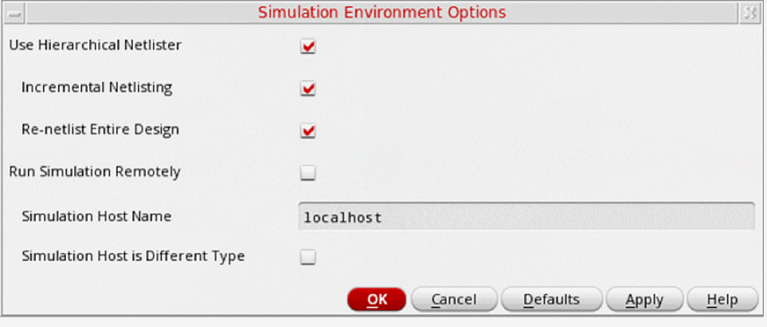

Specifying Simulation Environment Options
You can use the Simulation – Options command before you run a simulation to specify the following:
These options determine whether the system creates a flat or hierarchical netlist, runs remote simulation, or runs the simdiff command during the simulation process. The fields on the Options form have the default values or the values you specified when you last ran a simulation in the current simulation run directory.
The Simulation – Options command is enabled only after you have used the Initialize command to initialize the simulation environment.
To specify the simulation environment options:
-
In the schematic window, select Simulation – Options.
The Simulation Environment Options form appears.
 - Select Use Hierarchical Netlister to netlist using the hierarchical netlister.
- Select Run Simulation Remotely to run the simulation remotely.
- Click OK.
The system updates the simulation environment with the specified simulation options.
Related Topics
Variables for Incremental Netlisting
Return to top